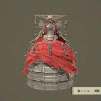
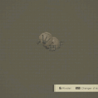
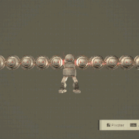
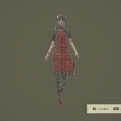
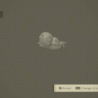

Histoire
NieR:Automata, l'incroyable jeu de Yoko Taro récompensé à de nombreuses reprises.
Dans un avenir lointain…
Des envahisseurs venus d’un autre monde attaquent sans crier gare, déchaînant une nouvelle menace : des armes dévastatrices, connues sous le nom de « formes de vie mécaniques ». Confrontée à cette menace insurmontable, l’Humanité est contrainte de fuir la Terre pour se réfugier sur la Lune.
Les humains ne tardent pas à former une Résistance composée de soldats androïdes visant à reconquérir leur planète. Pour faire le poids face aux machines des envahisseurs, la Résistance déploie une nouvelle unité d'infanterie androïde nommée YoRHa.
Sur la Terre dévastée, la guerre entre machines et androïdes fait rage. Un conflit qui va bientôt faire la lumière sur la réalité oubliée de ce monde…
Vidéo d'annonce : BECOME AS GODS Edition
Changer de vidéo
Les boss
Les boss ennemis les plus importants.
-

Marx
référence à Karl Marx
Cette forme de vie mécanique de classe Goliath des plus massives évoque une machine lourde d'antan. Si, à première vue, ses capacités destructrices semblent suffire à justifier son existence, une inspection approfondie de ses caractéristiques amène à réviser ce jugement. Au combat, elle s'attaque à ses ennemis avec une pelleteuse mécanique modifiée.
-

Engels
référence à Friedrich Engels
Cette forme de vie mécanique de class Goliath des plus massives est capable de se fondre dans le paysage en se faisant passer pour un immeuble. La quantité incroyable d'énergie circulant dans ses entrailles la force à émettre de puissants jets de vapeur pour réguler sa température interne. La chaleur générée par ses bras offensifs déclenche aussi souvent de petits incendies. Elle n'a sans doute été produite qu'en nombre très limité, même si plusieurs de ces machines ont été récemment découvertes dans l'usine désaffectée.
-

Adam
référence à Adam dans la Genèse de la Bible
Cette unité, qui ressemble fortement aux androïdes, a atteint un degré d'évolution surprenant pour une forme de vie mécanique. Elle a vu le jour en s'extirpant, nue, d'un cocon composé de machines. Ses premiers pas évoquaient la maladresse d'un nouveau-né, mais elle s'est rapidement adaptée et a très vite découvert de nouevlles techniques d'attaque.
Adam est fasciné par les humains et tente de les imiter. -

Ève
référence à Ève dans la Genèse de la Bible
Semblable à Adam. Il est capable de se régénérer, même après avoir été tué d'innombrables fois, et voue une adoration sans borne à la forme de connue sous le nom d'Adam, qu'il considère comme son frère aîné.
-

Simone
référence à Simone de Beauvoir
Cette forme de vie mécanique de class Goliath, au modèle inspiré par une cantatrice humaine, harcelait ses ennemis en leur envoyant des androïdes vivants, mais reconvertis à sa cause. Obsédée par une autre forme de vie mécanique, elle prenait le plus grand soin de son apparence, allant même jusqu'à phagocyter certaines de ses congénères.
-

Grün
référence à Karl Theodor Ferdinand Grün
Cette forme de vie mécanique gigantesque avait été conçue pour annihiler les androïdes. Cependant, trop prompt à attaquer ses propres alliés, ce titan a finalement été jeté à la mer. Ce que l'on a pris un moment pour son corps entier n'est enn fait que sa tête : la machine dépassait les 1 000 mètres une fois debout ! Ses puissantes défenses et son armure épaisse le font depuis longtemps paraître invulnérable.
-

Hegel
référence à Friedrich Hegel
Cette unité est le résultat de la fusion de plusieurs formes de vie mécaniques multipèdes de class Goliath. Son débit d'énergie colossal lui permet de se maintenir en l'air, comme de se diviser ou de se rassembler à volonté, le tout en déchaînant une série d'attaques variées.
-

Auguste
référence à Auguste Comte ou à Auguste Schlegel
Cette forme de vie mécanique joue le rôle d'aîné pour ses très nombreux fidèles. Elle possède l'apparence d'une machine bipède standard de taille moyenne, si ce n'est pour ses bras, qui proviennent d'un composant de forme sphérique. Il convient de l'approcher avec prudence, car cette machine est connue pour entrer dans une colère noire et cha^tier quiconque ose s'en prendre à ses "petits frères".
-

Rousse
Nom officiel : "Terminal". Ce logiciel provient du réseau de serveurs des formes de vie mécaniques.
-

Clones d'Émile
référence à Ludwig Emil Grimm
Ces colosses sont des copies d'Émile ayant atteint le stade ultime de leur évolution. Ces androïdes malheureux sont capables de déchaîner des attaques aussi fulgurantes que dévastatrices avec leurs armes magiques du vieux monde.
-
Voir
toutes les
unités